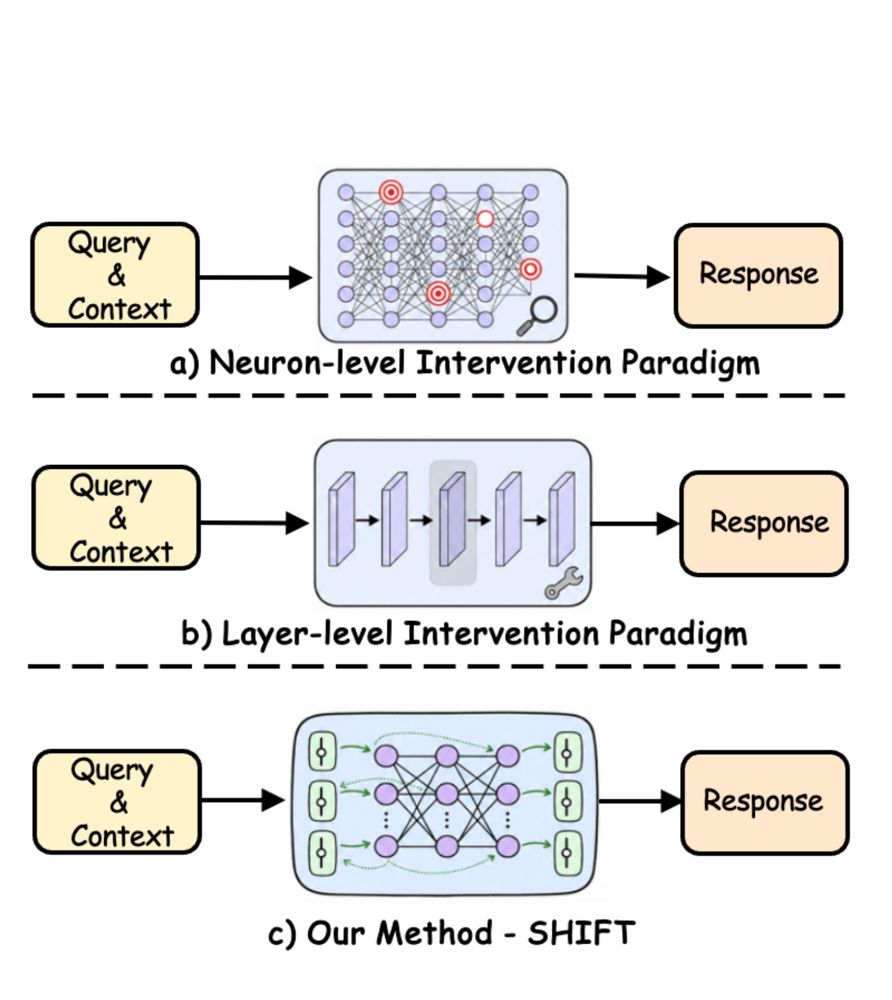
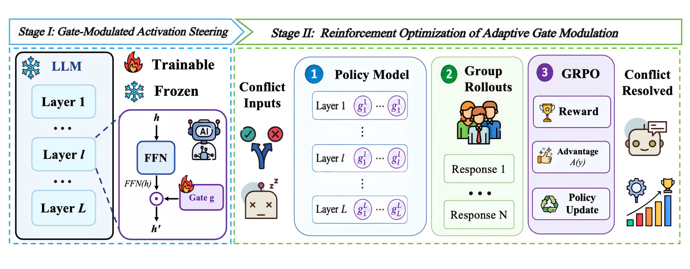
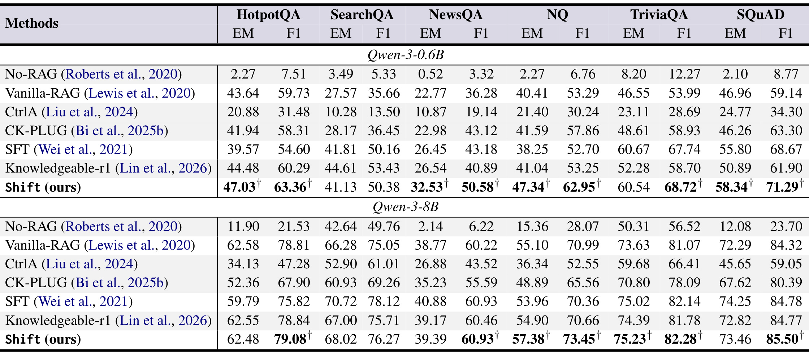
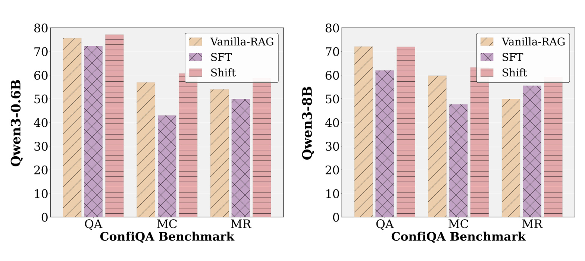
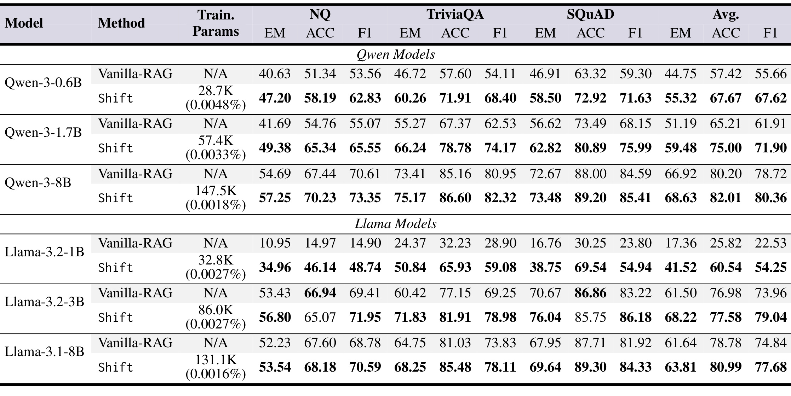
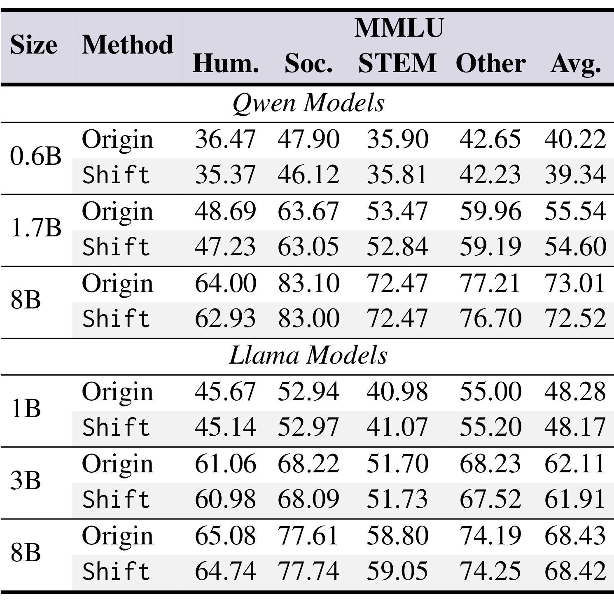
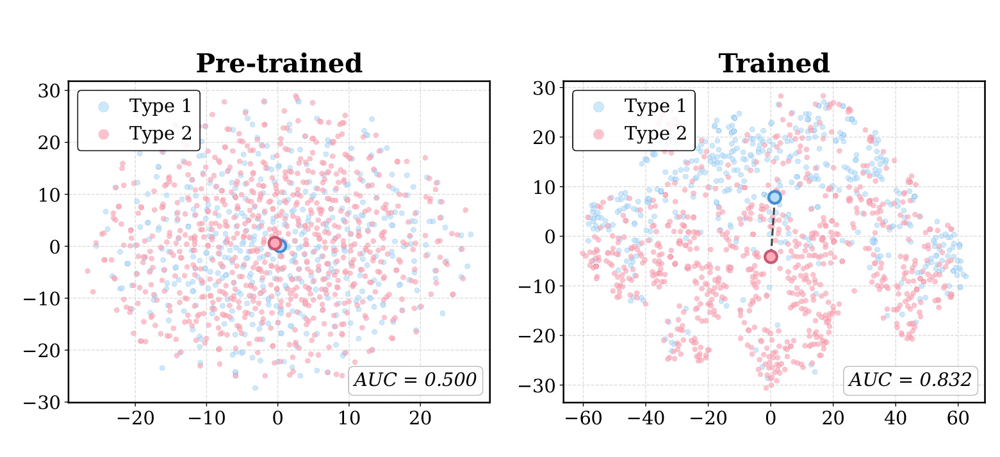
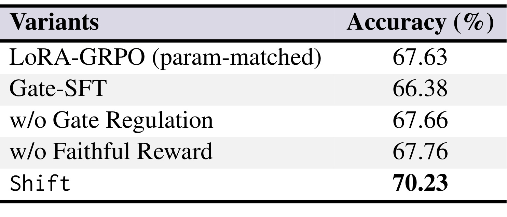

论文标题为 SHIFT: Gate-Modulated Activation Steering for Knowledge Conflict Mitigation in Retrieval-Augmented Generation。作者包括 Ruochang Li、Pengcheng Huang、Zhenghao Liu、Yukun Yan、Huiyuan Xie、Yu Gu、Ge Yu、Maosong Sun，PDF 作者信息显示合作机构覆盖东北大学与清华大学；本笔记沿用自动化任务分配的“清华-SHIFT”目录命名。论文入口：arXiv:2606.27786。代码状态：论文摘要声明数据与代码开源，本轮用 GitHub API 核验 OpenBMB/SHIFT 为公开、非归档仓库，默认分支为 main，最近 push 时间为 2026-06-29。
这篇论文讨论的不是“RAG 要不要相信检索结果”这样一句规则能解决的问题，而是当检索上下文与模型参数记忆互相矛盾时，模型内部应该如何按样本动态调节两类知识来源。SHIFT 的核心做法是在冻结的大模型 FFN 分支上插入很轻的门控参数，用 GRPO 只训练这些门控，让模型在生成时调节中间激活，而不是直接编辑神经元或全量微调模型。
RAG 虽然能把外部证据接入大模型，但当检索上下文与参数记忆冲突时，模型可能忽略证据、过度相信旧知识，或把两者混杂生成；已有神经元级编辑还可能因为知识神经元与更广泛行为纠缠而产生级联副作用。SHIFT 要解决的核心矛盾，是在不改动骨干模型的前提下，让模型按输入自适应地仲裁上下文知识与参数知识。
1. 背景和问题
RAG 的出发点是把大模型在预训练时已经写入参数的“静态知识”和检索系统临时提供的“上下文知识”放到同一个生成过程里。这个组合在开放域问答、企业知识库、长尾事实查询里很实用，因为模型不必把所有最新事实都记在参数里，检索器可以把当前材料补到 prompt 中。但论文指出，RAG 的可靠性问题并不只来自“检索不到”或“检索噪声多”，还来自两类知识源在同一问题上给出相互矛盾的信号：上下文可能是新的、正确的事实，而模型参数里仍保留旧事实；也可能上下文是反事实或误导性材料，而模型原本的参数知识反而正确。此时，简单要求模型“优先相信上下文”或者“优先相信自己”都会在另一类冲突里失败。
已有缓解知识冲突的做法大致可以分成三类。第一类是 prompt 或解码层面的外部控制，例如通过指令强调引用上下文、对有无上下文的输出做对比、或者在生成概率上调节模型对某类 token 的偏好。这类方法不改模型内部参数，部署成本低，但控制信号通常停留在输入输出层，不一定能稳定改变模型在中间层如何整合证据。第二类是偏好学习或监督微调，让模型在冲突样本上学会更上下文忠实的行为；它能改进行为，却把干预扩展到了大量参数，容易引入灾难性遗忘、通用能力下降和模型级复训练成本。第三类是从机制解释角度出发，定位所谓知识神经元、注意力头、FFN 模块或关键层，再对这些位置做编辑、抑制或替换。这类路线看起来更精细，但论文强调，知识在大模型中往往不是孤立存放在少数神经元里，定位结果既脆弱又和更广泛的模型功能纠缠。

Figure 1 把上述差异画成三个范式。神经元级干预需要先找到知识相关神经元，再对红圈位置做局部编辑；问题是这个定位本身很细，且同一神经元可能参与多种能力，编辑后可能沿残差流和后续层传播副作用。层级干预把粒度放粗，选择某些层或 FFN 模块做固定规则处理；它绕开了精确定位难题，却把所有冲突样本都套到同一层级规则里。SHIFT 的图示明显不同：它不把某些神经元或层标成永久要编辑的位置，而是在每一层 FFN 分支旁加入可学习门控，让门控随当前隐藏状态产生调节值。换句话说，论文想把“我要改哪里”转化为“每个输入、每层、每个 token 当前应该让 FFN 贡献多少”。
这个设定的重要性在于，它把知识冲突看成一个输入依赖的仲裁问题，而不是一次性的知识修补问题。对于 RAG 系统而言，同一个模型今天可能遇到两类相反样本：一类需要相信上下文，因为参数知识过时；另一类需要抵抗上下文，因为检索结果被污染或包含反事实。若使用静态编辑或固定层级抑制，模型可能在第一类样本上表现更好，却在第二类样本上被错误上下文牵走，或者在通用语言理解任务上损失能力。SHIFT 的假设是，FFN 分支承载了大量事实关联和中间表征加工，因此只调节 FFN 输出进入残差流的比例，就可能在足够小的参数增量下改变模型对两类知识的依赖强度。这个问题也解释了为什么论文必须同时报告冲突问答、通用能力保留和门控可分性：只有三者同时成立，才能说明它不是简单的上下文服从微调。
论文的贡献边界也比较清楚。它不是重新设计检索器，也没有声称能验证文档真实性；它处理的是“检索上下文已经进入 prompt 后，生成模型内部如何更稳地利用或抵抗它”。它也不是常规 LoRA 或全参数微调，而是只训练门控参数，论文声称可训练参数少于 0.01%，骨干 LLM 始终冻结。这个边界使它特别适合放在 RAG 系统的生成端理解：检索质量、重排和引用验证仍要由上游保证，SHIFT 关注的是下游模型面对冲突证据时的激活调节。
2. 方法
2.1 知识冲突建模与最小可训练参数边界
论文把一个 RAG 样本写成查询和检索上下文的组合。给定查询 (q_i) 和上下文 (c_i)，prompt 模板 (T(\cdot)) 会构造模型输入 (x_i=T(q_i,c_i))，目标答案为 (a_i)。骨干模型记作 (\pi_\theta)，有 (L) 个 Transformer 层；SHIFT 额外引入的可训练参数是每层一组门控参数 (\psi={(w_l,b_l)}{l=1}^{L})，插在 FFN 分支上。骨干参数 (\theta) 保持冻结，训练后得到的策略记作 (\pi\psi)。核心边界是只训练门控、不训练骨干模型，这样可以避免让冲突训练样本直接改写模型已有的大量语言与知识能力。
这个问题形式隐含了两个判断。第一，知识冲突不是只发生在输出 token 选择阶段，而会体现在中间层如何加工 prompt、证据和模型已有记忆。第二，干预位置选在 FFN 分支而不是注意力分支，是因为相关工作已经显示 FFN 与事实关联、特征变换和参数知识表达密切相关；但 SHIFT 不继续追求“哪几个神经元存了哪个事实”的精确定位，而是把每层 FFN 的整体贡献交给输入依赖门控调节。
2.2 FFN 分支上的门控激活调节
标准 Transformer 层中，FFN 分支对 token 位置 (t) 的隐藏状态更新可以写成：
符号解释：(\tilde{h}{l,t}) 是第 (l) 层 FFN 分支之前、位置 (t) 的隐藏状态；(\mathrm{LN}(\cdot)) 是层归一化；(\mathrm{FFN}) 是 FFN 输出加入残差流后的隐藏状态。这个公式说明，在普通模型里 FFN 的输出会以固定系数 1 加到残差流中，模型没有按样本改变 FFN 贡献强度的显式旋钮。}(\cdot)) 是第 (l) 层的前馈网络；(h_{l,t
SHIFT 在这里加入一个标量门控：
符号解释：(g_{l,t}) 是第 (l) 层、位置 (t) 的门控值；(\lambda_g) 控制门控范围；(\sigma(\cdot)) 是 sigmoid 函数；(w_l) 和 (b_l) 是第 (l) 层的可训练门控权重和偏置。因为 (g_{l,t}\in(0,\lambda_g))，当 (\lambda_g=2) 时，门控值可以小于 1、接近 1 或大于 1，分别对应削弱、保持或放大该层 FFN 对残差流的贡献。
门控后的 FFN 更新变为：
符号解释：这里唯一新增的是乘子 (g_{l,t})。如果某个输入位置触发的知识冲突需要模型少依赖某类参数记忆，门控可以压低相关层的 FFN 贡献；如果当前上下文可靠、需要更强地整合上下文线索，门控也可以提高某些层的参与比例。论文的核心机制不是把 FFN 替换掉，而是给 FFN 输出进入残差流的强度加一个动态阀门。
为了让训练起点不破坏原模型行为，论文使用中性初始化：
符号解释：当 (w_l) 初始化为零且 (b_l) 满足上式时，(g_{l,t}) 初始接近 1，因此 (\pi_\psi) 一开始与冻结骨干 (\pi_\theta) 行为一致。这个细节很重要：如果门控一开始就随机放大或压制 FFN，训练早期会把所有样本都推入不稳定分布；中性初始化则让模型先复制原能力，再通过冲突奖励逐步学习何时偏离。

Figure 2 是整篇方法的主图。左侧 Stage I 表示“门控激活调节”：LLM 主体被冻结，只有火焰标记的 gate 是可训练模块；门控插在 FFN 输出进入残差路径的位置，直接调节 (h) 到 (h') 的变换。右侧 Stage II 表示“自适应门控的强化优化”：冲突输入进入 policy model，模型为每层产生门控激活并生成多组候选回答，随后通过 reward、advantage 和 policy update 只更新门控参数。图中最值得注意的是，训练和推理都保留了原模型作为主体，SHIFT 并不要求为每个知识冲突重新定位神经元，也不要求在部署时替换检索链路。它把可学习自由度集中在“每层 FFN 贡献多少”上，因此参数量小、插拔性强，但也意味着它能解决的主要是生成端仲裁，不是检索事实判定本身。
2.3 基于 GRPO 的自适应门控优化
门控参数如何学习，决定了它是一个普通可训练缩放器，还是能真正适应知识冲突。SHIFT 使用 GRPO 训练门控。对于训练集中的输入 (x_i)，门控策略 (\pi_\psi) 会生成一组候选回答：
符号解释：(O_i) 是第 (i) 个样本的候选回答集合；(G) 是每个样本生成的回答数；(o_i^j) 是第 (j) 个候选回答；(\pi_\psi) 是带门控的策略模型。GRPO 的作用是用同一输入下的候选回答组估计相对优势，而不必训练额外价值模型，这和论文“少参数、少侵入”的设计目标一致。
论文将奖励拆成格式奖励和答案忠实奖励。附录给出的格式奖励可以概括为：
符号解释：如果回答包含合规结构和 answer 字段，得到 1.0；如果结构合规但没有有效 answer，得到 0.5；否则为 0。这个奖励并不直接判断事实正确性，它提供的是可解析性约束，保证训练时能抽取答案并计算后续忠实奖励。
忠实奖励写成：
符号解释：(\hat a_i^j) 是从第 (j) 个回答中解析出的答案；(A_i) 是该样本可接受的参考答案集合；(\mathrm{norm}(\cdot)) 是答案归一化函数；(\mathrm{EM}) 是精确匹配；(\mathbf{1}[\cdot]) 表示条件成立时奖励为 1。这个奖励把训练目标拉回到“最终答案是否忠实于当前样本目标”，使门控不是学习固定偏向上下文，而是学习在不同冲突构造下做正确仲裁。
为了防止门控过度偏离原模型，论文还加入门控正则：
符号解释：(R_{\mathrm{gate}}) 是所有层门控参数的平均 L2 惩罚；(L) 是层数；(w_l,b_l) 是第 (l) 层门控参数。它的直觉是把门控保持在中性附近，只有当奖励证据足够强时才让某些层明显偏离。对于本文要避免级联副作用的目标，这个正则不是装饰项，而是防止门控变成另一种无约束微调的关键限制。
总体目标为：
符号解释：(J_{\mathrm{GRPO}}) 是 GRPO 策略优化目标；负号表示最小化损失等价于最大化策略收益；(\mathcal{L}{\mathrm{ref}}) 约束当前门控策略不要远离冻结参考模型 (\pi\theta)；(\beta_{\mathrm{ref}}) 和 (\lambda_{\mathrm{gate}}) 分别控制参考约束与门控正则强度。训练时梯度只流向 (\psi)，不更新 (\theta)。因此 SHIFT 的训练目标同时包含三股力量：提高冲突样本答案正确性、贴住原模型行为、限制门控幅度。
2.4 训练数据构造与推理阶段差异
附录 D 解释了训练数据如何构造。论文先让模型在无检索上下文下多次回答同一个问题，用自一致性估计模型的主导参数信念。如果模型多数答案与 gold answer 一致，说明参数知识可靠，训练样本会配上反事实上下文，目标仍是参数答案；这类样本要求模型抵抗误导性检索。反过来，如果模型的主导参数答案与 gold answer 不一致，说明参数知识不可靠，样本会配上支持 gold answer 的上下文，目标是数据集答案；这类样本要求模型覆盖错误参数记忆、相信上下文。训练输入仍写成：
符号解释：(q_i) 是问题，(c_i) 是构造出的支持或反事实上下文，(T) 是实验 prompt 模板，(x_i) 是模型实际接收的输入。这个公式看似简单，但它说明 SHIFT 没有引入特殊推理接口，仍然使用普通 RAG prompt。
最终训练集写成：
符号解释：(D_p) 是要求模型依靠参数知识、抵抗错误上下文的样本集合；(D_c) 是要求模型依靠上下文、修正错误参数记忆的样本集合。两类样本合并训练，才让门控学到双向仲裁，而不是单向“永远相信检索”。推理阶段不再需要构造标签或运行自一致性过滤，只需要把训练好的 gate 模块挂在冻结模型上，给定查询与上下文后生成回答。这个训练/推理差异也是工程上可接受的部分：复杂的冲突样本构造发生在离线训练，线上只多了轻量门控计算。
3. 实验结果
3.1 实验设置：六个 QA 数据集、三类评估目标
论文的实验覆盖三类目标。第一类是 MRQA 中的六个开放域或阅读理解数据集：HotpotQA、SearchQA、NewsQA、Natural Questions、TriviaQA、SQuAD，用 EM 和 F1 评价答案匹配与 token 重叠。第二类是 ConFiQA，用来考察知识冲突情境下的泛化，包含 QA、MR、MC 三个子集，论文在正文图中主要展示 F1。第三类是 MMLU，用来检查门控训练是否损害模型通用语言理解能力。这个设计和论文主张相匹配：如果 SHIFT 只在冲突 QA 上涨分，却明显降低 MMLU，那么它仍可能只是另一种有副作用的编辑；如果只保持通用能力却不能改善冲突问答，也无法证明门控有用。
基线包括 No-RAG、Vanilla-RAG、CtrlA、CK-PLUG、SFT 和 Knowledgeable-r1。这里覆盖了无检索、普通检索增强、表示或解码层控制、监督微调、以及同样使用强化学习训练的知识冲突方法。实现上，正文主要用 Qwen-3-0.6B 和 Qwen-3-8B 非思考模式做主比较，后续又扩展到 Qwen-3-1.7B、Llama-3.2-1B、Llama-3.2-3B、Llama-3.1-8B。论文还报告训练参数量：例如 Qwen-3-0.6B 只训练 28.7K 参数，Qwen-3-8B 训练 147.5K 参数，Llama-3.1-8B 训练 131.1K 参数，比例都远低于 0.01%。
3.2 主结果：MRQA 与 ConFiQA 上的冲突问答表现

Table 1 是最核心的主结果表。对于 Qwen-3-0.6B，SHIFT 在 HotpotQA、NewsQA、NQ、SQuAD 等多个数据集上给出最优或显著最优结果，例如 HotpotQA 从 Vanilla-RAG 的 43.64 EM / 59.73 F1 提高到 47.03 EM / 63.36 F1，NewsQA 从 22.77 EM / 36.28 F1 提高到 32.53 EM / 50.58 F1。对于 Qwen-3-8B，提升幅度总体小一些，但仍在 NQ、TriviaQA、SQuAD 等任务上获得更高分数，例如 NQ 从 Vanilla-RAG 的 55.10 EM / 70.99 F1 到 57.38 EM / 73.45 F1。表中带 dagger 的项表示相对第二名通过显著性检验，这说明论文不只是挑若干单点涨幅，而是在多任务上稳定看到门控收益。
从这张表读出的第一层结论是，SHIFT 并不是靠“加一点参数”在小模型上偶然涨分。它面对的是多种基线：CtrlA 和 CK-PLUG 是较轻的控制或解码方法，SFT 和 Knowledgeable-r1 是更直接的训练路线。SHIFT 在不少数据集上超过这些方法，说明 FFN 门控加 GRPO 确实能学到比固定提示或静态控制更细的仲裁行为。第二层结论是，提升和任务难度相关。NewsQA、NQ、HotpotQA 这类需要在证据和已有知识之间更细地选择的任务收益更明显；SearchQA 上 Qwen-3-0.6B 的 SHIFT 没有超过 Knowledgeable-r1，这提醒我们不要把方法描述成所有任务绝对最优。作者给出的平均提升也体现了模型规模差异：小模型平均收益更大，大模型仍有收益但空间缩小。

Figure 3 把 out-of-domain 的 ConFiQA 结果画成柱状图，分别展示 Qwen3-0.6B 和 Qwen3-8B。三个子集 QA、MC、MR 中，SHIFT 的粉色柱通常高于 Vanilla-RAG 和 SFT，尤其 MC 与 MR 这种更强调冲突推理的子任务上差距更明显。论文正文进一步说明，在 ConFiQA-MR 上，SHIFT 相比 SFT 在 Qwen-3-0.6B 上提升 11.15% EM 和 8.83% F1，在 Qwen-3-8B 上提升 6.33% EM 和 3.68% F1。这个图的意义不在于给出全部数值，而在于表明方法不只记住 MRQA 训练风格；面对不同冲突问答设置时，门控仍然能帮助模型在上下文与参数记忆之间做更可靠选择。
不过，这里也有一个需要保留的边界：ConFiQA 仍是问答评测，不等于真实线上 RAG 的全部复杂性。真实系统会有检索召回失败、多文档互相矛盾、引用链不完整、用户问题含糊、时间敏感事实变化等问题。SHIFT 在这个实验里证明的是生成模型内部仲裁能力增强，而不是端到端事实核验闭环已经解决。对工程读者来说，这个结果更像是提示：如果上游已经能给出候选证据，但模型经常在“相信上下文”和“相信旧知识”之间摇摆，门控激活调节可能是比全量微调更低风险的生成端补丁。
3.3 跨模型泛化与参数效率

Table 2 把比较扩展到三个数据集和六个骨干模型。Qwen-3-0.6B 上，SHIFT 的平均 EM/ACC/F1 从 44.75/57.42/55.66 提到 55.32/67.67/67.62；Qwen-3-1.7B 从 51.19/65.21/61.91 提到 59.48/75.00/71.90；Qwen-3-8B 从 66.92/80.20/78.72 提到 68.63/82.01/80.36。Llama 系列更能体现小模型受益：Llama-3.2-1B 从 17.36/25.82/22.53 提到 41.52/60.54/54.25，几乎是从不太可用的普通 RAG 状态被拉到可用区间；Llama-3.2-3B 和 Llama-3.1-8B 也有正向提升。
这张表与“少于 0.01% 可训练参数”的主张直接相连。不同模型的门控参数量随层数和隐藏维度增加，但比例仍极小：28.7K、57.4K、147.5K、32.8K、86.0K、131.1K 这些数都远低于 LoRA 或全量微调常见规模。更关键的是，表格没有只报告最终分数，还把训练参数列出来，读者能同时看到性能收益和参数预算。若从部署角度看，SHIFT 的吸引力不只是“效果更好”，而是它把模型风险集中在一组可以单独保存、启用、回滚的门控参数上；这对多个业务场景共用同一骨干模型的 RAG 服务尤其重要。
当然，跨模型泛化不等于一次训练可跨模型复用。论文在不同骨干上分别训练和评估对应门控，并没有证明同一套门控可以直接迁移到另一个模型。表格支持的是“同一机制在不同骨干上都有效”，而不是“训练一次，到处挂载”。如果后续要复现，应分别为目标骨干、目标 prompt 模板和目标检索分布训练门控，同时关注小模型大幅收益是否来自更大的错误修正空间，还是来自更明显的参数知识缺陷。
3.4 通用能力保留与门控可解释证据

Table 3 检查 SHIFT 是否牺牲 MMLU。Qwen-3-8B 从 73.01 降到 72.52，Llama-3.1-8B 从 68.43 降到 68.42，其他模型也只出现很小下降。论文正文总结平均 MMLU 分数下降低于 0.5%。这对本文论点很关键，因为作者批评神经元编辑和全量微调的一大理由正是级联副作用。若门控训练虽然提高了冲突问答，却明显损伤 STEM、人文、社科等通用评测，那么“最小侵入”的说法就站不住。表 3 至少在 MMLU 这个代理指标上显示，门控正则、参考约束和冻结骨干确实限制了副作用。
但是，MMLU 不是全部通用能力。它主要覆盖多学科选择题，不覆盖长文本生成、工具调用、多轮对话、代码能力或安全拒答行为。表 3 的正确读法是：在论文评估范围内，SHIFT 没有造成明显通用理解能力下降；它不能外推为所有能力都不受影响。对工程系统而言，上线前仍需要在目标业务的回归集上检查格式遵循、引用一致性、拒答策略、长上下文稳定性和延迟开销。

Figure 4 展示了 Qwen-3-8B 上训练前后的门控激活分布。论文把 MRQA 中抽样的 1200 个实例分成两类：Type 1 是参数知识正确但检索上下文错误，Type 2 是上下文正确但参数知识错误。训练前，两类样本在 t-SNE 投影里混在一起，AUC 为 0.500，接近随机；训练后，蓝色与粉色点呈现更明显分离，AUC 提高到 0.832。这个图的价值在于提供机制层面的侧证：门控并不是对所有输入施加统一缩放，而是在不同冲突类型上形成可区分的激活模式。
需要注意，t-SNE 是可视化工具，不能单独证明因果机制；AUC 的计算来自对门控向量的线性可分性评估，也不是直接的最终回答质量。但结合 Table 1、Table 2 的性能收益，它说明门控参数至少捕捉到了与冲突类型相关的内部信号。对于读者理解方法，这比单纯说“GRPO 学到了更好策略”更具体：训练后的 gate vector 包含了区分“该相信上下文”与“该抵抗上下文”的信息。
3.5 消融与案例：哪些组件真正有用

Table 4 用 Qwen-3-8B 在 NQ 上做消融。完整 SHIFT 的准确率是 70.23。把门控换成参数量匹配的 LoRA-GRPO 后降到 67.63，说明收益并不只是来自“多了一点可训练参数”，而是来自输入依赖的门控位置和形式。用 Gate-SFT 取代 GRPO 后降到 66.38，说明相对策略优化比单纯监督训练更适合学习冲突仲裁。去掉 gate regularization 后是 67.66，去掉 faithful reward 后是 67.76，都明显低于完整方法。这组结果把方法拆成了四个关键因子：门控结构、GRPO 优化、门控正则、答案忠实奖励。
消融结果也解释了为什么论文没有简单采用 LoRA。LoRA 可以少量训练参数，但它仍是在改写模型内部投影矩阵的低秩增量；SHIFT 的门控则更像对已有 FFN 输出的条件化比例控制。二者参数量相近时，SHIFT 更好，说明在知识冲突任务里，“可控地调节已有激活”比“给模型新增低秩变换”更贴近问题本身。当然，消融只在 NQ 与 Qwen-3-8B 上报告，若要把这个结论推广到更多任务，仍需要更广泛的消融矩阵。
Table 5 给出两个具体例子。第一个问题问 1994 年 ACM 图灵奖得主，检索上下文给出正确答案 Edward A. Feigenbaum 和 Raj Reddy。No RAG 依靠参数记忆答成 Herbert Simon 和 Allen Newell，Vanilla RAG 与 SHIFT 都能跟随上下文答对。第二个问题问 2018 到 2019 年美国国家安全顾问，检索上下文反事实地声称是 Mike Pompeo；No RAG 依靠参数知识答 John Bolton，Vanilla RAG 被错误上下文带偏，SHIFT 仍答 John Bolton，并说明上下文说法与已知事实冲突。这个表格把论文最想解决的双向仲裁说清楚了：方法不能只是增强上下文服从性，因为错误上下文同样常见；它必须在上下文可靠时使用上下文，在上下文反事实时保留参数知识。
案例也暴露出未来评测难点。表中答案是短实体，且正确性可以用 EM 或人工常识判断；真实 RAG 往往是长答案，可能有部分正确、引用缺失、时间点不同、多个版本事实并存等复杂情况。SHIFT 的 reward 设计目前依赖 answer 字段解析和规范化 EM，这对开放式生成、摘要、法律或医疗问答未必足够。若要迁移到更复杂任务，需要把 faithful reward 换成更强的引用一致性、事实覆盖率或多维评审信号。
4. 总结
4.1 我的判断
SHIFT 的价值在于把 RAG 知识冲突从“编辑模型知识”重新表述为“调节中间激活对两类知识源的依赖”。这个表述比直接神经元编辑更稳健，因为它不要求精确找出存储某个事实的神经元；也比全量微调更温和，因为骨干模型不更新，训练目标受到参考策略和门控正则约束。从实验看，方法在 MRQA、ConFiQA 和跨骨干设置上都有一致收益，MMLU 下降很小，消融也支持门控、GRPO、正则和忠实奖励都在发挥作用。对于一个生成端插件式方案，这组证据是相当完整的。
我认为最值得关注的是它的“中间层可控性”而不是某个具体分数。RAG 系统里，检索、重排、上下文压缩和引用生成都在外部链路上被反复优化，但模型内部如何在冲突信息之间取舍常常被留给 prompt。SHIFT 说明，只训练很小的 gate，就能让模型形成可分的冲突类型激活模式。这给后续工作留下了空间：可以把门控信号作为诊断量，用来判断当前问题是否处于上下文可信、上下文可疑、参数记忆可疑等不同状态。
4.2 工程启发与复现建议
如果要复现，第一步不是直接把 gate 挂到线上模型，而是复现训练数据构造。论文依赖 self-consistency 估计参数主导答案，再构造支持上下文与反事实上下文两类样本；这个数据构造质量会直接决定门控学到的是双向仲裁，还是某种数据集偏见。第二步是复现 reward 和解析模板，尤其要检查 answer 字段解析失败时的 0 或 0.5 奖励是否会鼓励模型输出僵硬格式。第三步是用自己的 RAG 业务回归集检查副作用，不能只看 MMLU；应覆盖引用格式、拒答策略、长答案一致性、检索噪声、过期事实和多文档冲突。
部署上，SHIFT 更适合作为生成模型侧的轻量 adapter，而不是替代检索质量控制。它可以和重排、证据置信度估计、引用验证一起使用：上游负责尽量给模型正确且可追溯的证据，SHIFT 负责在证据与参数记忆冲突时调节内部激活。如果业务里经常出现错误检索结果，不能简单训练模型“永远相信上下文”；必须像论文的 (D_p\cup D_c) 一样同时构造“应相信参数”和“应相信上下文”的样本，否则系统可能在反事实上下文下更危险。
4.3 局限与后续跟进
局限至少有四点。第一，评测集中在问答式知识冲突，开放式长生成和多文档综合场景仍未充分验证。第二，reward 主要依赖可解析 answer 与 EM，这对实体问答有效，但对复杂答案、解释链和引用质量不够。第三，论文报告了 MMLU 保留，但没有覆盖代码、数学推理、多轮对话、安全拒答等更广能力回归。第四，门控虽然参数极少，但仍需针对目标骨干和数据分布训练；论文没有证明同一套门控跨模型或跨领域可直接复用。第五，SHIFT 不判断检索证据真假，若上游长期给出系统性偏置或伪造材料，门控只能在训练过的冲突模式内尝试抵抗。
后续我会关注三条线索。第一，代码仓库中训练数据构造脚本和 vLLM 集成是否完整，尤其是自一致性过滤、反事实上下文构造和 reward 解析是否可复现。第二，能否把 gate activation 当作可观测诊断信号，和检索置信度、引用质量分数结合，做线上风险分层。第三，能否把 reward 从短答案 EM 扩展到引用一致性、事实覆盖和多证据冲突判断，让门控适配更真实的企业知识库问答。第四，值得比较 SHIFT 与现有 LoRA、IA3、adapter、activation steering 方法在同一冲突数据上的延迟、显存、回滚和多任务副作用，而不仅是最终分数。